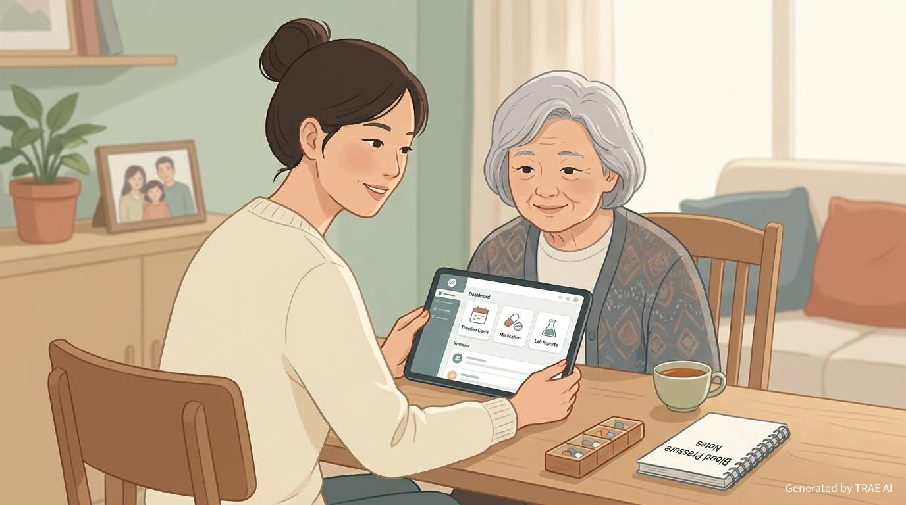

社会服务创意
家护记
家护记是一款面向家庭共享的健康记录小程序，用来整理家里人的病情、用药、检查结果和复诊提醒，让照护信息不再零散，也让家属之间更容易接力查看与补充。

创意名称与介绍
一句话定位
家护记不是替代医生判断的医疗工具，而是一份面向家庭成员共享的健康档案与照护协作记录，让重要信息不再散落在药袋、聊天记录和纸质报告里。
| 模块 | 内容 |
|---|---|
| 创意名称 | 家护记。这个名字强调“家人一起照护”和“持续记录”，适合家庭长期陪护、慢病管理和居家康复场景。 |
| 想解决什么问题 | 家里老人、慢病患者或术后恢复者的健康信息往往很零散，病名记不全、药名记不住、检查单找不到。到了复诊、买药或急诊时，家属常常只能凭印象回忆，既费时间，也容易遗漏关键信息。 |
| 为什么会想到做这个 | 很多家庭真正的困难，不是没有看病，而是看完之后缺少一份能长期接续的家庭健康记录。灵感来自现实中的照护场景：家属需要反复翻聊天记录、药盒照片、出院小结，才能确认最近吃什么药、做过什么检查、医生要求怎么跟进。 |
| 大概是什么产品 | 一个面向家庭共享的健康记录小程序，支持病情记录、药物归档、检查结果留存、复诊提醒和家属协作查看。 |
目标用户及痛点
面向哪些用户
核心用户是有老人、慢病患者、术后恢复者或需要长期跟踪健康数据的家庭。除了本人，也包括异地子女、配偶、兄弟姐妹等实际承担照护沟通与陪诊事务的家属。
在什么场景下使用
| 使用场景 | 用户会做什么 | 为什么需要它 |
|---|---|---|
| 门诊或复诊前 | 快速查看最近症状、药物变化和检查结果 | 避免到医院后临时回忆，减少遗漏与重复检查 |
| 日常照护中 | 记录血压、血糖、疼痛、睡眠、饮食和异常反应 | 让零散观察形成连续轨迹，便于后续判断变化 |
| 买药或整理药盒时 | 核对当前在吃的药、剂量和服用频率 | 减少重复购药、漏服和混淆药物的情况 |
| 异地照护时 | 家属远程查看最近记录与提醒 | 即使不在身边，也能知道近况并及时沟通 |
| 突发不适或急诊时 | 立即调出病史、过敏信息、近期检查和常用药 | 在紧张时刻更快补全关键信息，减少沟通成本 |
当前痛点
- 很多家庭的健康信息分散在纸质病历、药袋、手机相册和微信群里，想查时经常找不到。
- 照护者之间缺少统一记录，今天是谁陪诊、医生说了什么、药有没有换，往往靠口头转述。
- 检查数据没有连续归档时，用户很难清楚看到是变好、变坏，还是只是临时波动。
- 老年人记忆负担较大，单靠自己记住病名、药名和服药要求并不现实。
产品轮廓
家护记的核心不是把信息越记越多，而是把家庭健康信息整理成“能看懂、能接力、能追溯”的结构。
可以包含的几个关键功能
- 健康时间线：按日期串起发病、就诊、开药、复查、住院与异常变化。
- 用药档案：记录药名、剂量、服用时间、停药原因和不良反应备注。
- 检查结果归档：保存化验、影像、体征数据，并支持同类检查前后对照。
- 家属协作：允许被授权的家人共同查看与补充记录，减少重复沟通。
- 提醒与备注：在复诊、续药、复查节点前提醒，避免忘记关键事项。
这类产品更像一份面向家庭的健康陪护工具，重点在于信息整理、照护协同与长期连续性，而不是给出医学诊断结论。
价值与意义
效率提升
它能把原本分散的病情、药物与检查信息集中起来，明显降低家庭照护中的整理成本、沟通成本和复诊准备成本。家属不需要在关键时刻反复翻找照片和聊天记录，医生沟通前也能更快梳理重点。
社会价值
随着老龄化和慢病管理需求增加，家庭已经成为健康照护的重要一环。家护记把“一个人硬记”变成“一家人可协作”的方式，有助于提升普通家庭的健康管理能力，也能让异地照护、长期陪护和居家康复变得更有连续性和温度。
总结
这项创意希望把“一个人硬记”变成“一家人共用”，让健康记录真正成为家庭照护的一部分，也让长期照护这件事更有连续性和温度。